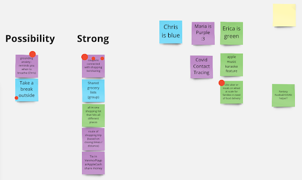
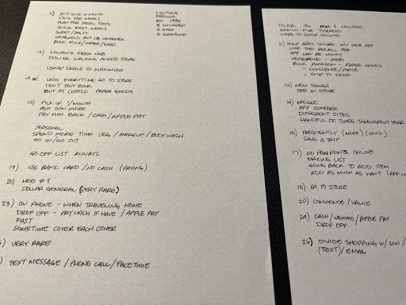

Problem Statement

Busy, working parents need to easily share grocery shopping lists, duties, and payment between friends and family due to increased responsibility for others during a global pandemic.
To create an app that allowed users to share grocery lists so that when either user was at the store they could easily pick up the items. This app would involve using location-based alerts to notify users when their family or friend was at the store. Seamlessly integrate another user’s grocery list in yours while still maintaining separation.
Project Date
2020 - DEC 2020 (three weeks)
Team
3 UX/UI designers
My responsibilities
Project manager, UX researcher, UI designer
How can busy, working parents easily share grocery shopping lists, duties, and payments between friends and family due to increased responsibility for others during a global pandemic? Sharing grocery lists can take on a variety of methods but may not be the most effective way.
Text messaging is available to everyone but grocery lists can be lost among several messages. Knowing what another family member needs often requires some forethought or results in finding out after the fact.
To create an app that allowed users to share grocery lists so that when either user was at the store they could easily pick up the items. This app would involve using location-based alerts to notify users when their family or friend was at the store. Seamlessly integrate another user’s grocery list in yours while still maintaining separation.
I conducted two of the user interviews amongst the team. My notes were transcribed onto a Google sheets file. After all the interviews were conducted, I shared my thoughts on the findings during one of our sprints. I held sprints every other day and used Trello to keep everyone up to date on the deliverables.
Busy, working parents need to easily share grocery shopping lists, duties, and payment between friends and family due to increased responsibility for others during a global pandemic.
We presented our wireframe sketches to each other, showing our ideas for onboarding and the features we had in mind. Once again, we used dot voting for the sketches on the best ideas.
Having a direction forward, I began creating mid-fidelity wireframes of the general layout based on the user flow developed by one of the team members. During this phase, I used the opportunity to train my teammates on how to use Figma with more efficiency.
The results from user testing demonstrated the gaps and inconsistency in our features. We also considered multiple paths for improvement for future iterations. The overall look and design of the app were well received along with the idea.